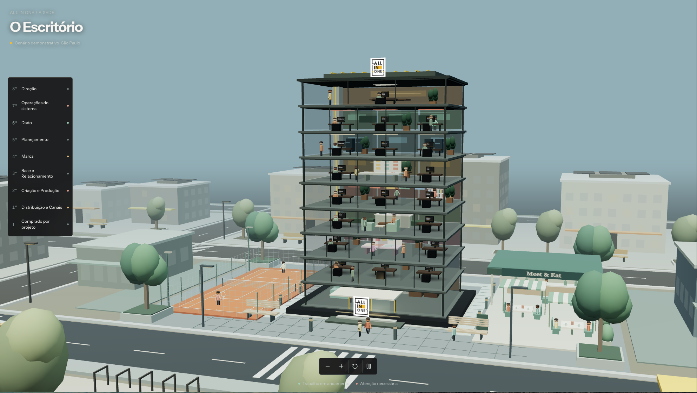

Dados dispersos
Cada sistema resolve uma parte. A visão completa depende de reunir tudo.
PROPOSTA COMERCIAL PARA FABIO
Um time de gestão com IA para conectar dados, encontrar desvios e apoiar suas decisões.
01 — 08
01 / O DESAFIO
Vendas em um sistema. Financeiro em outro. Estoque em planilha. Quando ninguém cruza os dados, os desvios passam despercebidos.
Cada sistema resolve uma parte. A visão completa depende de reunir tudo.
Tempo da equipe consumido por conferências e tarefas repetitivas.
Sem contexto, fica mais difícil entender o que mudou e onde agir.
02 / O CUSTO DO ESCURO
Desvios reais encontrados em operações de clientes quando os dados passam a conversar.
de custo real acima do praticado em um prato.
de diferença entre PDV e financeiro em uma categoria.
em créditos emitidos sem regra em um evento.
de alta em um insumo sem reajuste no preço.
Exemplos de ocorrências anteriores; não representam previsão para a operação de Fabio.
03 / NOSSA ORIGEM
A experiência com os números mostrou um padrão: os dados existiam. Faltava conectá-los todos os dias.
O Orkestri é a plataforma de IA da Paulistana para a gestão administrativa, financeira e o backoffice.
Reunir os sinais da sua operação.
Cruzar dados e investigar os desvios.
Recomendar ações para sua aprovação.
04 / CICLO 06 → 09
Vendas, pagamentos, estoque, caixa, delivery e anúncios.
Cada desvio recebe contexto e uma pontuação de gravidade.
O saudável, o que desviou e as decisões que pedem atenção.
Recomendações prontas para avaliação. A decisão é sempre sua.
05 / O ESCRITÓRIO DOS AGENTES
Cada andar representa uma disciplina da gestão. Os agentes leem, cruzam e priorizam sinais antes de levar as decisões para sua aprovação.

06 / UMA VISÃO INTEGRADA
Vendas, recebimentos e extratos, centavo a centavo.
Custos, margens, consumo, cortesias e descontos.
Metas e indicadores. Fora do padrão vira alerta.
Próximos passos, com sua aprovação como etapa final.
07 / INVESTIMENTO
Condições comerciais para Fabio.
Pagamento em até 12 parcelas
Valor mensal para o grupo
Selecione para incluir na conversa comercial.
Sem produtos adicionais selecionados.
PRÓXIMO PASSO
Agende um diagnóstico gratuito de até uma hora. Vamos olhar seus sistemas e identificar onde a operação precisa de atenção, sem compromisso.
Conversar com a Leila